1.3. EDA Techniques
1.3.6. Probability Distributions
1.3.6.6. Gallery of Distributions
1.3.6.6.16. |
Extreme Value Type I Distribution |
The general formula for the probability density function of the Gumbel (minimum) distribution is
\( f(x) = \frac{1} {\beta} e^{\frac{x-\mu}{\beta}}e^{-e^{\frac{x-\mu} {\beta}}} \)
where μ is the location parameter and β is the scale parameter. The case where μ = 0 and β = 1 is called the standard Gumbel distribution. The equation for the standard Gumbel distribution (minimum) reduces to
\( f(x) = e^{x}e^{-e^{x}} \)
The following is the plot of the Gumbel probability density function for the minimum case.
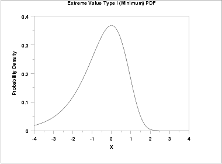
The general formula for the probability density function of the Gumbel (maximum) distribution is
\( f(x) = \frac{1}{\beta} e^{-\frac{x-\mu}{\beta}}e^{-e^{-\frac{x-\mu} {\beta}}} \)
where μ is the location parameter and β is the scale parameter. The case where μ = 0 and β = 1 is called the standard Gumbel distribution. The equation for the standard Gumbel distribution (maximum) reduces to
\( f(x) = e^{-x}e^{-e^{-x}} \)
The following is the plot of the Gumbel probability density function for the maximum case.
\( f(x) = e^{-x}e^{-e^{-x}} \)
Since the general form of probability functions can be expressed in terms of the standard distribution, all subsequent formulas in this section are given for the standard form of the function.
\( F(x) = 1 - e^{-e^{x}} \)
The following is the plot of the Gumbel cumulative distribution function for the minimum case.
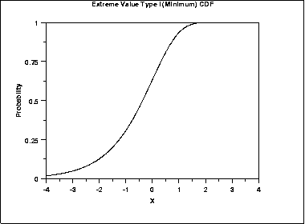
The formula for the cumulative distribution function of the Gumbel distribution (maximum) is
\( F(x) = e^{-e^{-x}} \)
The following is the plot of the Gumbel cumulative distribution function for the maximum case.
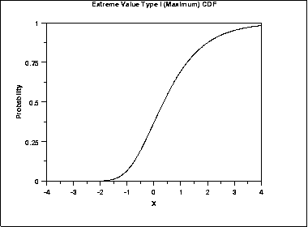
\( G(p) = \ln(\ln(\frac{1} {1 - p})) \)
The following is the plot of the Gumbel percent point function for the minimum case.
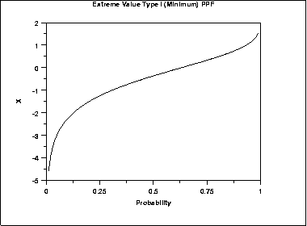
The formula for the percent point function of the Gumbel distribution (maximum) is
\( G(p) = -\ln(\ln(\frac{1} {p})) \)
The following is the plot of the Gumbel percent point function for the maximum case.

\( h(x) = e^{x} \)
The following is the plot of the Gumbel hazard function for the minimum case.
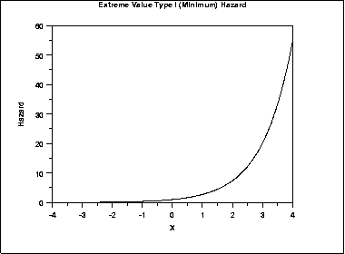
The formula for the hazard function of the Gumbel distribution (maximum) is
\( h(x) = \frac{e^{-x}} {e^{e^{-x}} - 1} \)
The following is the plot of the Gumbel hazard function for the maximum case.
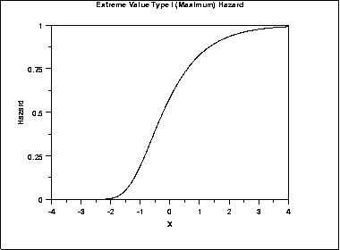
\( H(x) = e^{x} \)
The following is the plot of the Gumbel cumulative hazard function for the minimum case.
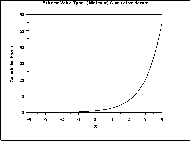
The formula for the cumulative hazard function of the Gumbel distribution (maximum) is
\( H(x) = -\ln(1 - e^{-e^{-x}}) \)
The following is the plot of the Gumbel cumulative hazard function for the maximum case.
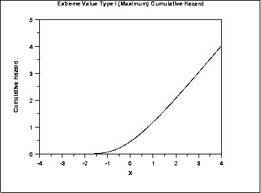
\( S(x) = e^{-e^{x}} \)
The following is the plot of the Gumbel survival function for the minimum case.
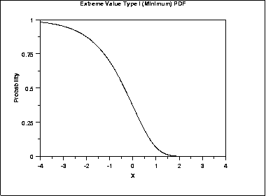
The formula for the survival function of the Gumbel distribution (maximum) is
\( S(x) = 1 - e^{-e^{-x}} \)
The following is the plot of the Gumbel survival function for the maximum case.
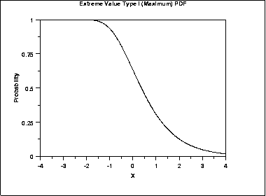
\( Z(p) = \ln(\ln(\frac{1} {p})) \)
The following is the plot of the Gumbel inverse survival function for the minimum case.
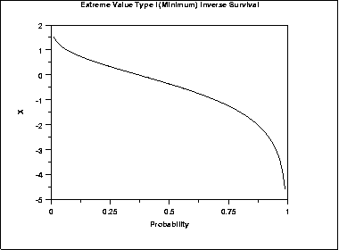
The formula for the inverse survival function of the Gumbel distribution (maximum) is
\( Z(p) = -\ln(\ln(\frac{1} {1-p})) \)
The following is the plot of the Gumbel inverse survival function for the maximum case.
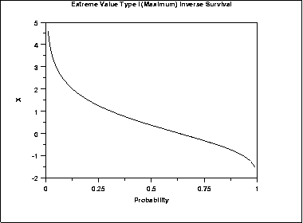
| Mean |
\( \mu + 0.5772\beta \)
The constant 0.5772 is Euler's number. |
| Median | \( \mu - \beta\ln(\ln(2)) \) |
| Mode | μ |
| Range | \(-\infty \mbox{ to } \infty\) |
| Standard Deviation | \( \frac{\beta\pi} {\sqrt{6}} \) |
| Skewness | 1.13955 |
| Kurtosis | 5.4 |
| Coefficient of Variation | \( \frac {\beta\pi} {\sqrt{6}(\mu + 0.5772\beta)} \) |
\( \tilde{\beta} = \frac{s\sqrt{6}} {\pi} \)
\( \tilde{\mu} = \bar{X} - 0.5772 \tilde{\beta} = \bar{X} - 0.45006 s \)
where \( \bar{X} \) and s are the sample mean and standard deviation, respectively.
The method of moments estimators of the Gumbel (minimum) distribution are
\( \tilde{\beta} = \frac{s\sqrt{6}} {\pi} \)
\( \tilde{\mu} = \bar{X} + 0.5772 \tilde{\beta} = \bar{X} + 0.45006 s \)
where \( \bar{X} \) and s are the sample mean and standard deviation, respectively.
The maximum likelihood estimates for the maximum case are the solution to the following simultaneous equations
\( \bar{x} - \frac{\sum_{i=1}^{n}{x_i \exp(-x_i/\hat{\beta})}} {\sum_{i=1}^{n}{\exp(-x_i/\hat{\beta})}} - \hat{\beta} = 0 \)
\( -\hat{\beta} \log \left( \frac{1}{n} \sum_{i=1}^{n}{\exp(-x_i/\hat{\beta})} \right) - \hat{\mu} = 0 \)
For the minimum case, replace \(-x_i\) with \(x_i\) in the above equations.
These equations need to be solved numerically and this is typically accomplished by using statistical software packages.